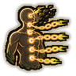
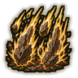

Technique trees › Clans and bloodlines
Hyuuga arts
13 techniques in the Clan tab.
Unlocks for pawns with the Byakugan gene.
Hakke Kūshō: Eight Trigrams Empty Palm D
Chakra 15. A palm strike of pure air that hits and throws back enemies in a line.
Hakke Kūshō: Eight Trigrams Empty Palm D
Chakra 15. A palm strike of pure air that hits and throws back enemies in a line.
A palm strike of pure air that hits and throws back enemies in a line.
| Rank | Chakra | Cooldown | Class level |
|---|---|---|---|
| D | 15 | 10 s | 2 |
Harichakra: Chakra Needles DB
Chakra 12 to 30. Fire needles of solid chakra. The great version is a single heavy needle.
Harichakra: Chakra Needles DB
Chakra 12 to 30. Fire needles of solid chakra. The great version is a single heavy needle.
Fire needles of solid chakra. The great version is a single heavy needle.
| Rank | Chakra | Cooldown | Class level |
|---|---|---|---|
| D | 12 | 7.5 s | 3 |
| B | 30 | 15 s | 9 |
Telescopic Eye C
Chakra 15. Focus the Byakugan for half an hour of far sharper shooting. Needs the Byakugan active.
Telescopic Eye C
Chakra 15. Focus the Byakugan for half an hour of far sharper shooting. Needs the Byakugan active.
Focus the Byakugan for half an hour of far sharper shooting. Needs the Byakugan active.
| Rank | Chakra | Cooldown | Class level |
|---|---|---|---|
| C | 15 | 1 hour | 4 |
Jūken Tenketsu: Gentle Fist Chakra Points CBA
Chakra 25 to 45. Strike the tenketsu, sealing chakra points so the target moves and fights worse for two minutes. Needs the Byakugan active.
Jūken Tenketsu: Gentle Fist Chakra Points CBA
Chakra 25 to 45. Strike the tenketsu, sealing chakra points so the target moves and fights worse for two minutes. Needs the Byakugan active.
Strike the tenketsu, sealing chakra points so the target moves and fights worse for two minutes. Needs the Byakugan active.
| Rank | Chakra | Cooldown | Class level |
|---|---|---|---|
| C | 25 | 15 s | 5 |
| B | 35 | 15 s | 9 |
| A | 45 | 15 s | 13 |
Hakke: Chakra Transfer Palm B
Chakra 30. Pass chakra into an ally through the palm, closing wounds.
Hakke: Chakra Transfer Palm B
Chakra 30. Pass chakra into an ally through the palm, closing wounds.
Pass chakra into an ally through the palm, closing wounds.
| Rank | Chakra | Cooldown | Class level |
|---|---|---|---|
| B | 30 | 1 hour | 8 |
Hakkeshō: Great Divination Whirl B
Chakra 35. A larger Rotation that hits and hurls away everyone close by.
Hakkeshō: Great Divination Whirl B
Chakra 35. A larger Rotation that hits and hurls away everyone close by.
A larger Rotation that hits and hurls away everyone close by.
| Rank | Chakra | Cooldown | Class level |
|---|---|---|---|
| B | 35 | 25 s | 10 |
Hakke Hasangeki: Eight Trigrams Mountain Crusher B
Chakra 45. A massive palm blast of chakra that flattens everything in a wide arc.
Hakke Hasangeki: Eight Trigrams Mountain Crusher B
Chakra 45. A massive palm blast of chakra that flattens everything in a wide arc.
A massive palm blast of chakra that flattens everything in a wide arc.
| Rank | Chakra | Cooldown | Class level |
|---|---|---|---|
| B | 45 | 1 hour | 11 |
Hakke: One Hundred Twenty-Eight Palms A
Chakra 55. A blinding chain of palm strikes on one enemy that seals their chakra network. Needs the Byakugan active.
Hakke: One Hundred Twenty-Eight Palms A
Chakra 55. A blinding chain of palm strikes on one enemy that seals their chakra network. Needs the Byakugan active.
A blinding chain of palm strikes on one enemy that seals their chakra network. Needs the Byakugan active.
| Rank | Chakra | Cooldown | Class level |
|---|---|---|---|
| A | 55 | 1.2 hours | 14 |
Shugohakke: Protection of the Sixty-Four Palms A
Chakra 50. For a minute, a sphere of chakra blades cuts anyone who comes close.
Shugohakke: Protection of the Sixty-Four Palms A
Chakra 50. For a minute, a sphere of chakra blades cuts anyone who comes close.
For a minute, a sphere of chakra blades cuts anyone who comes close.
| Rank | Chakra | Cooldown | Class level |
|---|---|---|---|
| A | 50 | 2 hours | 14 |
Chakra no Bodi: Body of Chakra A
Chakra 55. Coat the whole body in chakra for ten minutes: tougher, faster to dodge, harder hitting.
Chakra no Bodi: Body of Chakra A
Chakra 55. Coat the whole body in chakra for ten minutes: tougher, faster to dodge, harder hitting.
Coat the whole body in chakra for ten minutes: tougher, faster to dodge, harder hitting.
| Rank | Chakra | Cooldown | Class level |
|---|---|---|---|
| A | 55 | 2.4 hours | 15 |

Shinkan: Silence Gates BAS
Chakra 50 to 90. Close the target's chakra gates one after another. Each rank seals deeper. Needs the Byakugan active.
Shinkan: Silence Gates BAS
Chakra 50 to 90. Close the target's chakra gates one after another. Each rank seals deeper. Needs the Byakugan active.
Close the target's chakra gates one after another. Each rank seals deeper. Needs the Byakugan active.
| Rank | Chakra | Cooldown | Class level |
|---|---|---|---|
| B | 50 | 1.6 hours | 10 |
| A | 70 | 2.2 hours | 15 |
| S | 90 | 2.8 hours | 19 |

Hakke Hazan Hōgeki: Crumbling Mountain Bombardment S
Chakra 90. S-rank: a rain of chakra palm blasts over an area for five seconds.
Hakke Hazan Hōgeki: Crumbling Mountain Bombardment S
Chakra 90. S-rank: a rain of chakra palm blasts over an area for five seconds.
S-rank: a rain of chakra palm blasts over an area for five seconds.
| Rank | Chakra | Cooldown | Class level |
|---|---|---|---|
| S | 90 | 4.8 hours | 18 |
Shugohakke: Protection of the White God S
Chakra 110. S-rank: a towering chakra avatar guards the user for a minute and strikes everything nearby.
Shugohakke: Protection of the White God S
Chakra 110. S-rank: a towering chakra avatar guards the user for a minute and strikes everything nearby.
S-rank: a towering chakra avatar guards the user for a minute and strikes everything nearby.
| Rank | Chakra | Cooldown | Class level |
|---|---|---|---|
| S | 110 | 8 hours | 20 |
Chakra is the technique's base cost, the number in its def. In play it is multiplied by the pawn's chakra energy usage multiplier, which traits (chakra artificer 90%, volatile conduit 110%), World of Naruto genes and jutsu enhancements change, so the technique window can show a slightly different number for each ninja. Cooldowns are in-game time, as the technique window shows them, and the pawn's cooldown stat shortens or lengthens them. World of Naruto gives every ninja a base of 100 maximum chakra; genes and traits change it.